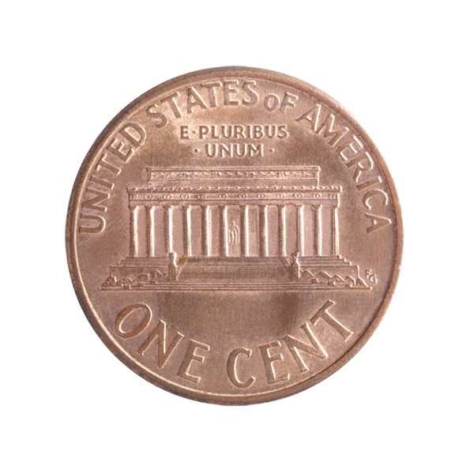
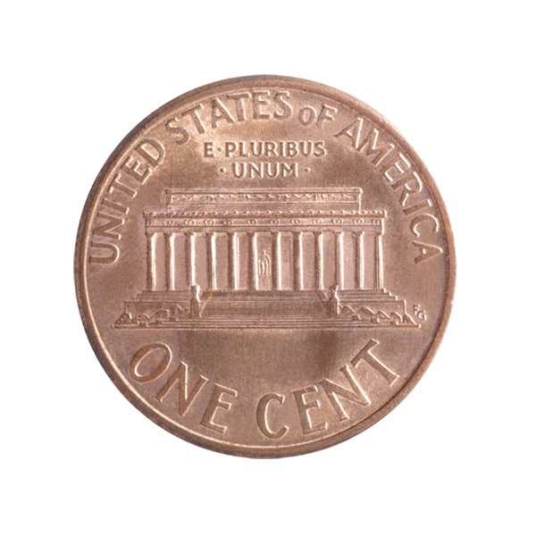

Авраам Линкольн
Артикул: 765432812-25
Символом удачи и талисманом у разных народов мира еще с древних времен стал четырехлистный клевер — чудо природы, которое часто не встретить.
В центре реверса находится рельефное изображение четырехлистного клевера. Лепестки клевера, изящно исполнены из серебра 925 пробы и эмали.
Монета укомплектована подарочным демонстрационным футляром.
Цена: 2 000 ₽
| Год | 2003 |
| Номинал на монете, ед. нац. валюты | 50000 Кипов |
| Страна-эмитент | Лаосская Народно-Демократическая Республика |
| Качество чеканки | PR |
| Металл | Серебро 925 проба |
| Масса хим.драгоценного металла в монете | 6 г. |